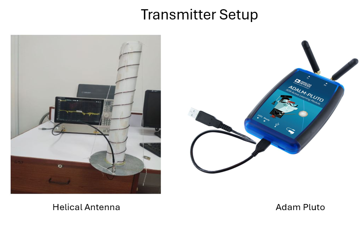

Final Year Research Project · Radar & Signal Processing
Drone Detection Using Passive Radar
A research project investigating passive radar techniques for detecting drones using software-defined radio and digital signal processing.
Role: Final Year Project Researcher

RESEARCH QUESTION
The project explored how passive radar can exploit existing radio-frequency illuminators rather than requiring a dedicated radar transmitter. The focus was drone detection through reflected signals and signal-processing techniques.
HARDWARE WE USED
ADALM-Pluto and Pluto+ were used as software-defined radio devices in the experimental transmitter/receiver arrangement and signal-acquisition workflow. Two Yagi-Uda antennas were used on the receiver side for directional signal reception, while a helical antenna was used on the transmitter side to provide circular polarization for the transmitted signal.
SIGNAL PROCESSING
MATLAB was used to configure and control the ADALM-Pluto on the transmitter side, while a Python-based pipeline handled the Pluto+ on the receiver side for IQ data acquisition, preprocessing, and digital signal processing relevant to passive radar, including cross-ambiguity function computation, FFT-based spectral analysis, and range-Doppler visualization.
SIGNAL PROCESSING
- Generated a linear FM (LFM) chirp waveform with 15 MHz bandwidth centered at 2.9 GHz in MATLAB, transmitted continuously via ADALM-Pluto with a 1 ms pulse duration, corresponding to a pulse repetition frequency (PRF) of 1 kHz.
- Acquired dual-channel IQ data at a 30 MHz sample rate on Pluto+ using a Python pipeline, with receiver gain configured asymmetrically at 30 dB on the reference channel and 40 dB on the surveillance channel to compensate for the weaker reflected signal path, over processing frames of 256 chirps.
- Performed dechirp (stretch) processing by mixing the surveillance channel with the conjugate of the reference channel, applying Hanning windowing in both fast-time (range) and slow-time (Doppler) domains to suppress spectral sidelobes before forming the range-Doppler map.
- Achieved a range resolution of 10 m and a Doppler resolution of ≈3.9 Hz (≈0.2 m/s velocity resolution), with a maximum unambiguous velocity of approximately 25.9 m/s (≈93 km/h) at the 2.9 GHz carrier frequency.
- Displayed live, normalized range-Doppler maps (-80 to 0 dB dynamic range) over a 500 m range window, alongside time-domain, spectrum, and max-hold profile visualizations for real-time target monitoring.
RESEARCH DIRECTION
The project connected RF hardware, signal processing and an applied detection problem, strengthening my interest in radar, sensing and autonomous systems.
RESULTS
Complete results, including range-Doppler detection outcomes, system testing, and final evaluation, are presented in our Final Year Project presentation below.
View Project Results →